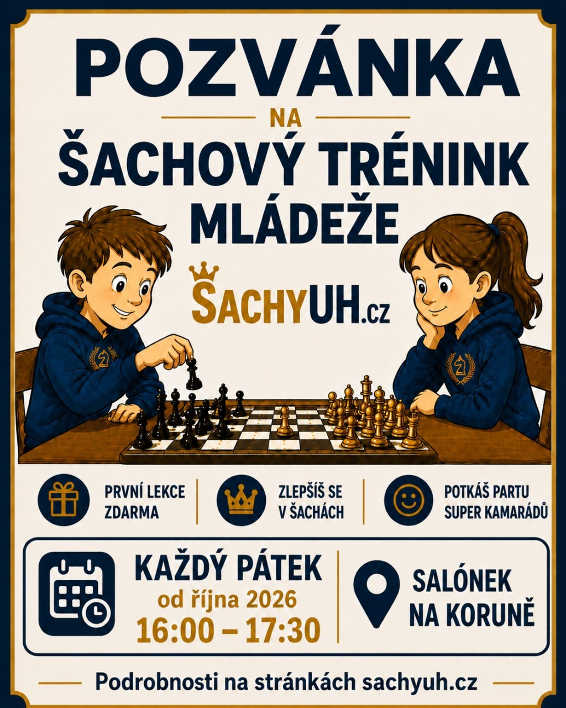

6. 9.
2026
2026
Letní šachová tour 2026 – 4. turnaj U Osla
Bleskový turnaj v hospůdce U Osla — 20 hráčů, 11 kol.
🥇 Petr Kapusta 🥈 Martin Vavřík 🥉 Jaroslav Sháněl


1. polovina (říjen 2026 – leden 2027)
2. 10., 9. 10., 16. 10., 23. 10., 6. 11., 13. 11., 20. 11., 27. 11., 4. 12., 11. 12., 18. 12., 8. 1., 15. 1., 22. 1.
2. polovina (únor – květen 2027)
5. 2., 12. 2., 19. 2., 26. 2., 5. 3., 19. 3., 2. 4., 9. 4., 16. 4., 23. 4., 30. 4., 7. 5.
Lekce nejsou: 30. 10. (podzimní prázdniny) · 25. 12.–1. 1. (vánoční prázdniny) · 29. 1. (pololetní prázdniny) · 12. 3. (jarní prázdniny) · 26. 3. (Velký pátek)
Od 14. 5. 2027 podle zájmu, případně budou vyhlášeny speciální šachové dny.
📧 Přihlášky: info@sachyuh.cz
Minulé akce
Bleskový turnaj v hospůdce U Osla — 20 hráčů, 11 kol.
🥇 Petr Kapusta 🥈 Martin Vavřík 🥉 Jaroslav Sháněl

Bleskový turnaj v hospůdce U Kovaříků — 16 hráčů, 11 kol.
🥇 Petr Kapusta 🥈 Milan Flekač 🥉 Ondřej Podškubka

Bleskový turnaj U Pučalíka — 13 hráčů, 11 kol.
🥇 Petr Kapusta 🥈 Jan Králík 🥉 František Králík

Bleskový turnaj v Na Koruně (salonek) — 22 hráčů, 11 kol.
🥇 Petr Kapusta 🥈 Jaroslav Sháněl 🥉 Jaroslav Buráň
Bleskový turnaj v Pivnici Koruna — 16 hráčů, švýcarský systém.
🥇 Jarek Sháněl
Šachová úloha
Bílý táhne — mat 2. tahem. Kde hraje bílý?